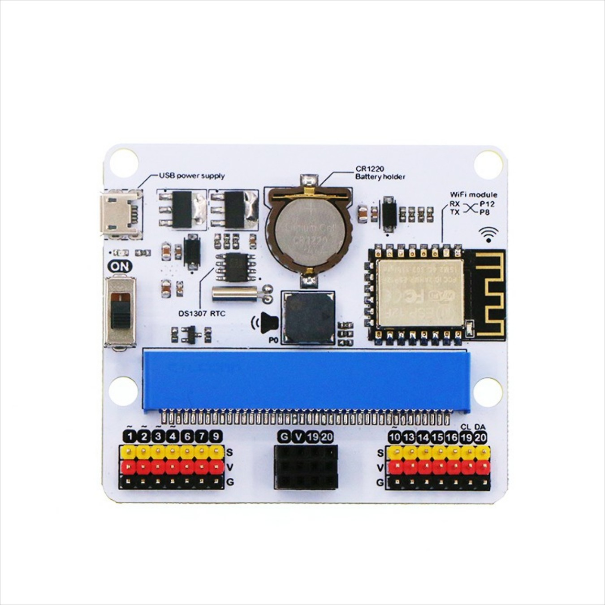

BCC Robotics Lesson Plan
Project 1 Virtual Simulated Environment
Class
Description
1
Development Environment
2
Virtual Environment - Outputs
3
LEDS
4
Icons
5
Serial output
6
If statements
7
Sounds
8
Melodies
Project 2 Mecanum Car and Joystick
Project 3 IOT device
This project will be based on the internet-of-things device:
